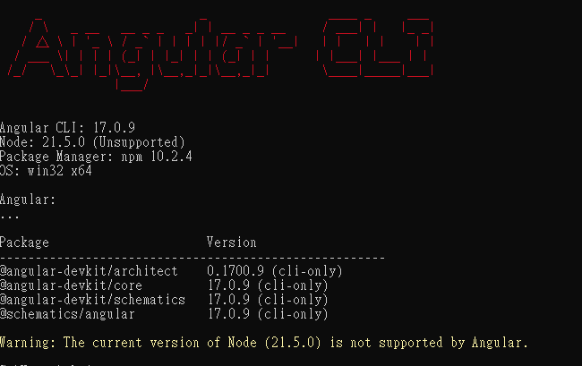
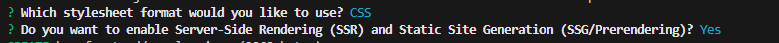
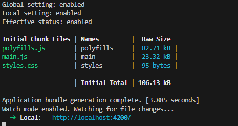
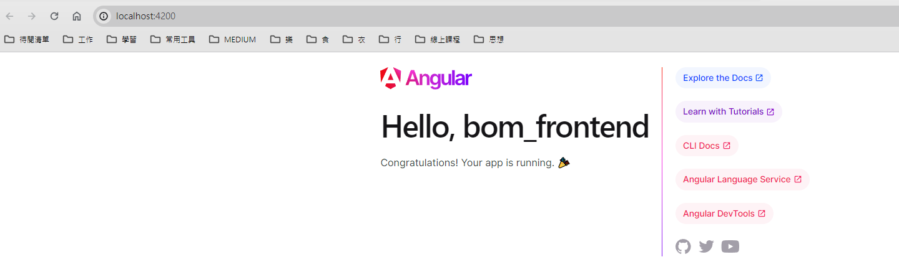

透過Angular CLI 建置Angular 開發環境，但在安裝Angular CLI之前
我們需要先安裝node.js，Window透過下面指令安裝，在powershell
choco install nodejs
安裝完成node.js之後，便可以透過npm指令安裝Angular CLI
npm i -g @angular/cli
最後可以使用下面指令來測試是否安裝成功
ng version
我們會看到在終端機中顯示以下畫面
使用下面指令建置專案
ng new [專案名稱]
期間會問兩個問題

這個問題是在詢問你是否想要啟用伺服器端渲染（Server-Side Rendering，簡稱SSR）和靜態網站生成（Static Site Generation，簡稱SSG或Prerendering）。
伺服器端渲染（SSR）:
SSR 是一種技術，其中伺服器在每次請求時渲染網頁並將完全渲染的頁面發送給客戶端。
這可以提高初始頁面加載性能，因為客戶端收到了一個預渲染的HTML頁面，內容已經填充。
對於搜索引擎優化（SEO）有利，因為搜索引擎可以索引完全渲染的內容。
靜態網站生成（SSG）或預渲染:
SSG包括在構建時生成靜態HTML頁面，而不是在每次請求時生成。
這種方法對於內容密集的網站很有用，其中內容不經常更改。
生成的靜態頁面可以直接從內容交付網絡（CDN）中提供，實現快速頁面加載。
考慮因素:
啟用SSR和SSG會為應用程序增加複雜性，選擇應基於你的具體用例和需求。
SSR更適合動態內容或內容經常更改的應用程序。
SSG適用於以內容為中心的網站、博客或文檔，其中內容可以在構建時預先渲染。
這兩種技術都可以提高性能和SEO，但決策應該與項目目標保持一致。
當收到此提示時，你需要根據你的項目需求和應用程序提供的內容類型，決定是否啟用這些功能。
先cd到剛剛建立的專案資料夾，並在該資料夾底下輸入以下指令
ng serve --open
我們就可以看到
點擊連結可開啟預設的網頁
